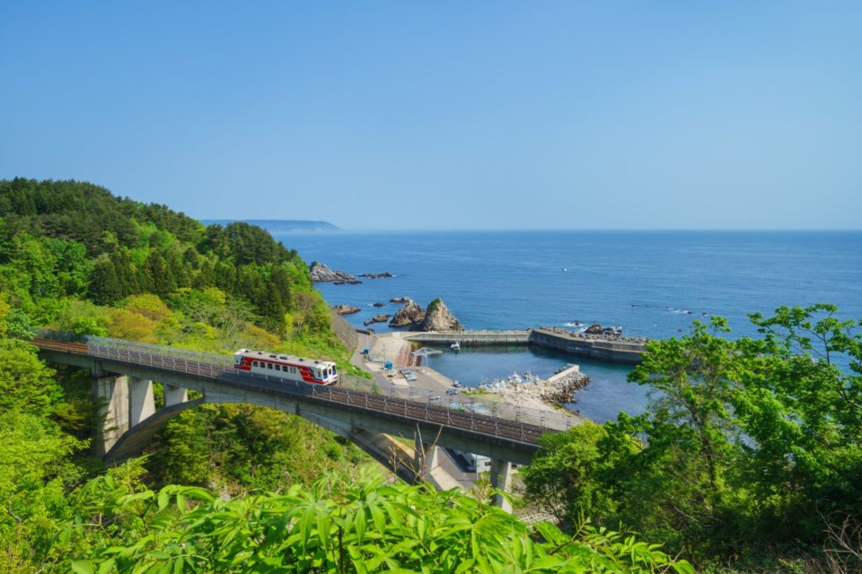
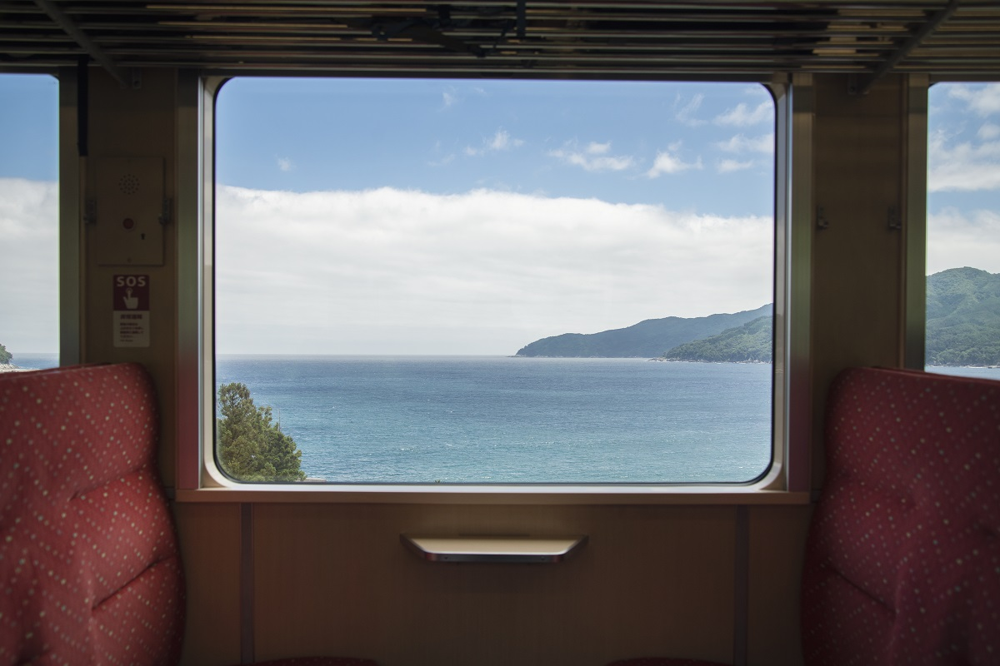
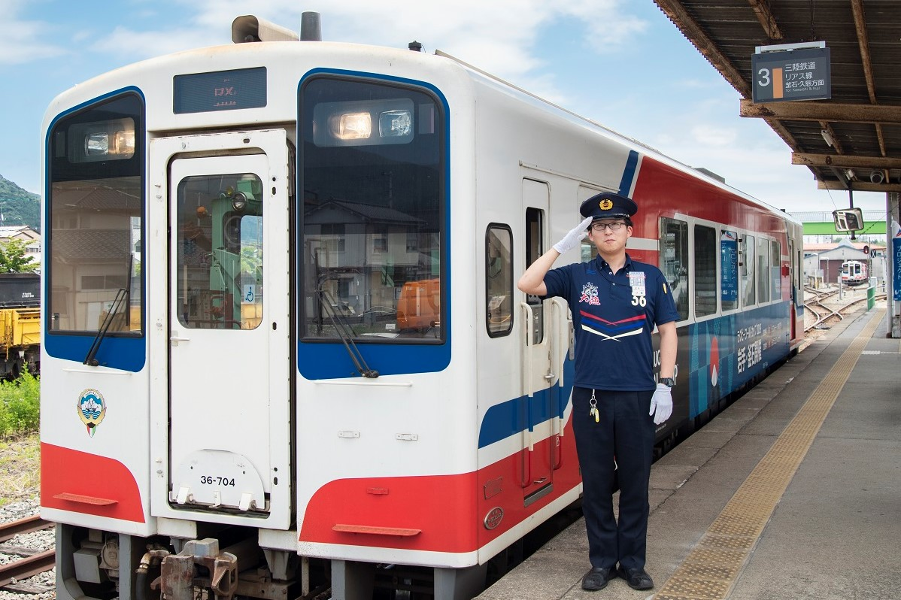
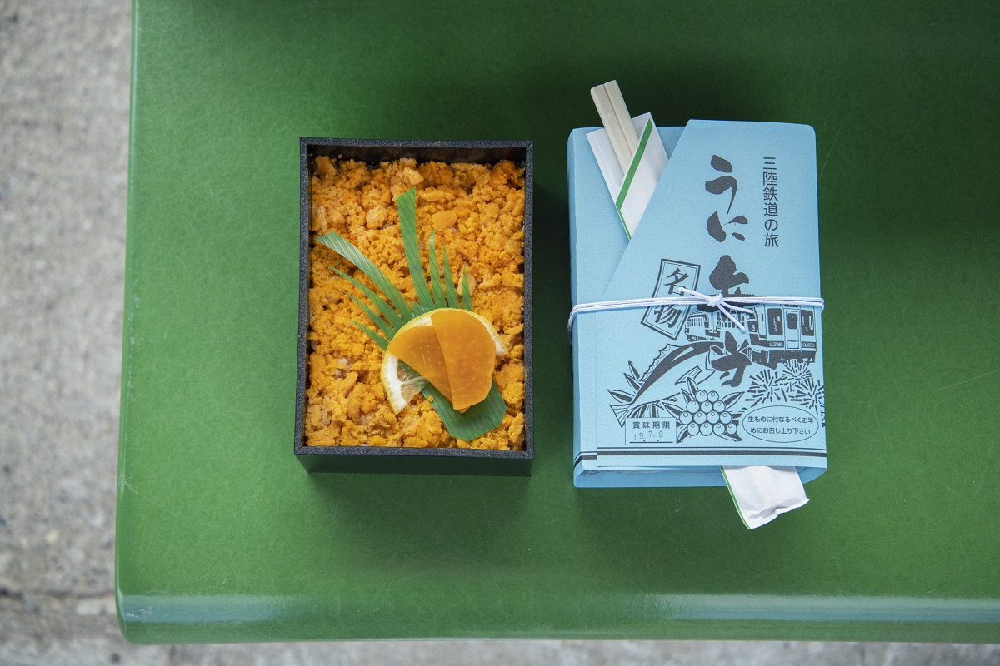
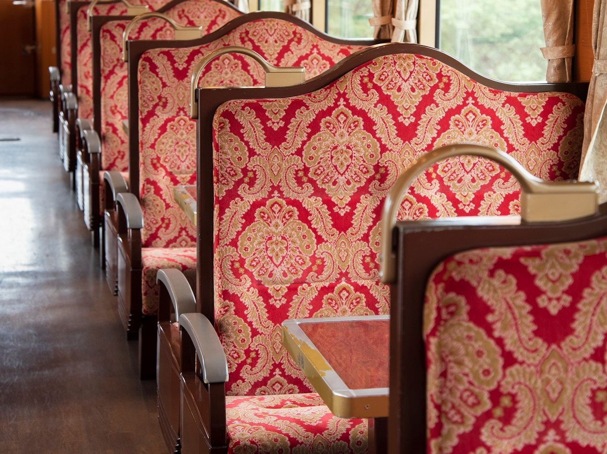

Префектура Иватэ · побережье Санрику · железная дорога
Линия Риасу: 163 километра побережья Санрику на одном поезде, от Кудзи до Сакари

В марте 2019 года на тихоокеанском побережье Иватэ открылась линия Риасу железной дороги Санрику, и от Кудзи на севере до Сакари на юге стало можно доехать без пересадок. После цунами 2011 года этот поезд называют символом восстановления края.
Линия
От Кудзи до Сакари без пересадок
23 марта 2019 года железной дороге Санрику передали участок между Камаиси и Мияко. Раньше он принадлежал линии Ямада компании JR и после цунами долго стоял на ремонте. Так появилась линия Риасу: она соединила станцию Кудзи на севере префектуры со станцией Сакари на юге. В ней 163 километра, и в 2019 году это была самая длинная в Японии линия «третьего сектора», то есть компании, которой вместе владеют местные власти и частный капитал.
Чтобы почувствовать линию целиком, лучше проехать её от начала до конца, ни разу не выходя из вагона. Дорога от Кудзи до Сакари занимает около четырёх с половиной часов.

История
Поезд, который вернулся через пять дней
Компанию «Железная дорога Санрику» основали в 1981 году. В 1984 году пошли поезда по двум линиям: Северной Риасу от Кудзи до Мияко и Южной Риасу от Камаиси до Сакари. Землетрясение и цунами 11 марта 2011 года остановили всё движение, но уже через пять дней, 16 марта, поезда снова поехали между Кудзи и Рикутю-Нодой.
Вскоре открылись и другие участки, и до конца марта 2011 года поезда возили людей бесплатно, как помощь пострадавшим районам. Говорят, что сам вид идущего поезда давал надежду тем, кто жил вдоль путей.

К 2014 году восстановили обе линии полностью. В день открытия линии Риасу, 23 марта 2019 года, между Камаиси и Мияко дважды прошёл туда и обратно праздничный поезд. На станциях и вдоль путей собрались толпы: люди махали флажками и рыбацкими флагами «тайрё-бата», которые поднимают в честь богатого улова.
В дорогу
Бэнто с морским ежом из Кудзи
Четыре с половиной часа в поезде проходят веселее с хорошим обедом. На станции Кудзи работает лавка «Санрику Риасу-тэй», и в её знаменитом «уни-бэнто» рис сплошь покрыт пареным морским ежом: на одну коробку уходит пять-шесть ежей.

Поездом управляет один машинист, а в вагоне едут не только туристы. Им пользуются школьники по дороге на уроки и жители, которым нужно в больницу или за покупками. Кто-то разговаривает, кто-то разворачивает бэнто, кто-то просто смотрит в окно, и атмосфера почти домашняя. Видно, что эту линию в округе любят.
«Санрику Риасу-тэй»
- Как добраться
- в здании станции Кудзи железной дороги Санрику
- Цены / Вход
- «уни-бэнто», 1470 иен (2019)
За окном
Мосты, тоннели и машущие жители
Поезд идёт вдоль побережья Санрику, и пейзаж всё время меняется: густо-синее море и небо, зелёные горы, города, которые отстраиваются после цунами. Тоннелей много, и каждый раз, когда поезд выходит из темноты, за окном открывается новый вид.

На самых красивых местах поезд останавливается или едет медленно: на мосту через реку Акка между Нода-Тамагавой и Хоринаем, на мосту Осава между Хоринаем и Сираи-Кайганом, на мосту через реку Хэй у Мияко. После каждой станции по громкой связи рассказывают, чем интересна следующая.
Вдоль путей жители машут проходящему поезду, и от этого становится тепло. Дорогу Санрику называют символом восстановления, но силы от неё получает скорее путешественник. Понять, чем хороша линия Риасу, можно только проехав по ней самому.
На побережье Санрику есть и ресторан в Танохате, где готовят из местных даров моря, о нём рассказывает статья L'Auréole Tanohata.
Железная дорога Санрику, линия Риасу
- Как добраться
- от станции Кудзи до станции Сакари, 163 км, около 4 часов 30 минут без пересадок
Фото: Канако Накамура, Aflo.